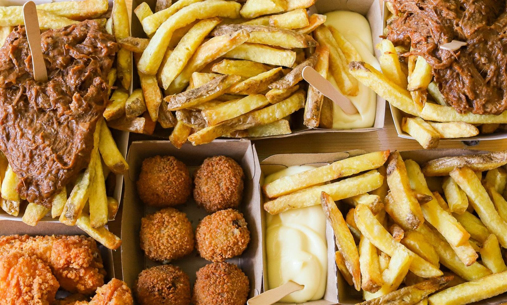
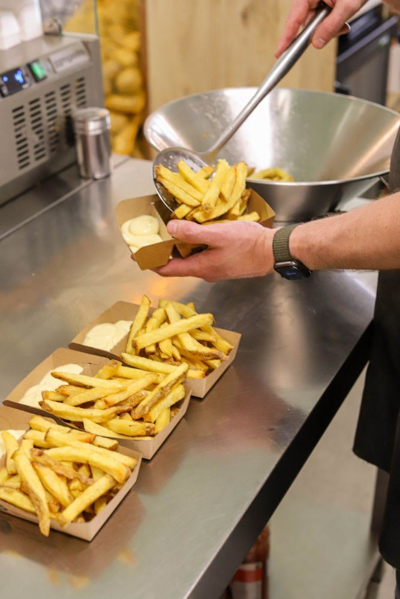
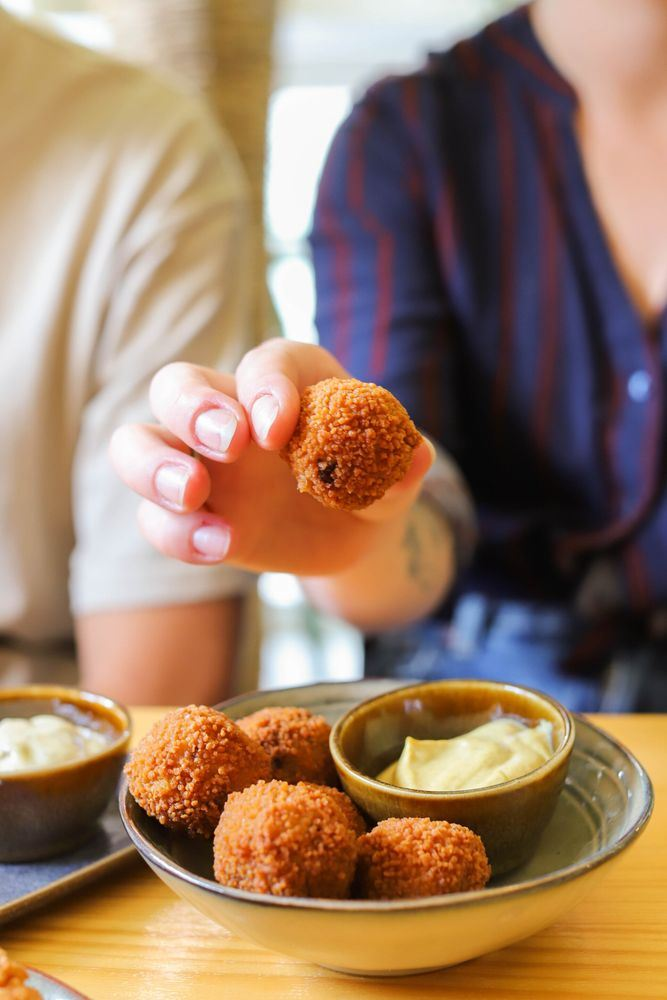
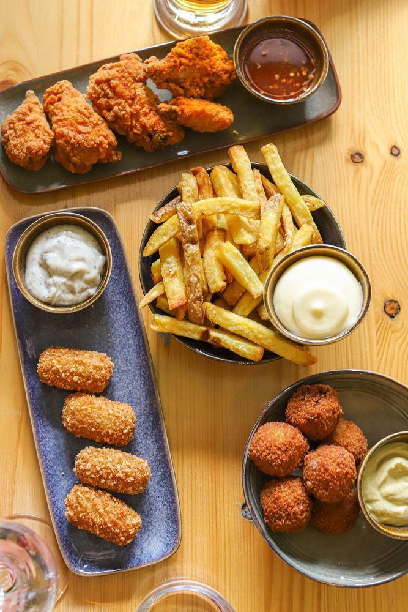
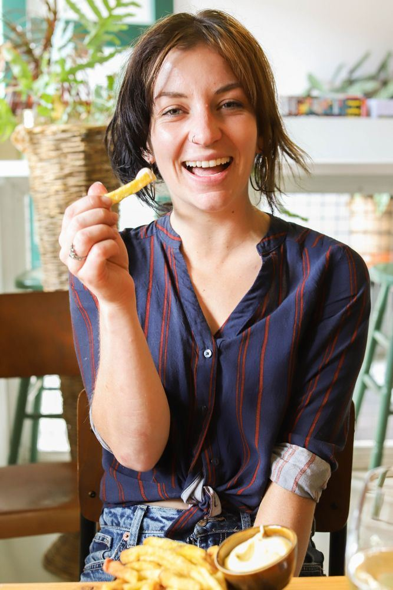
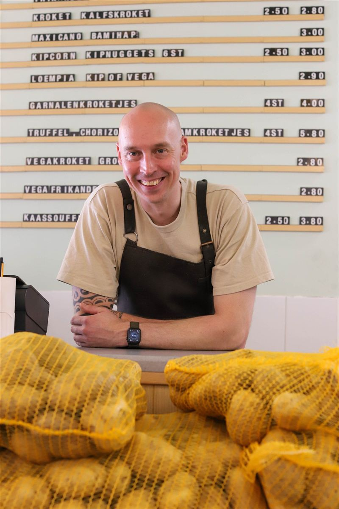
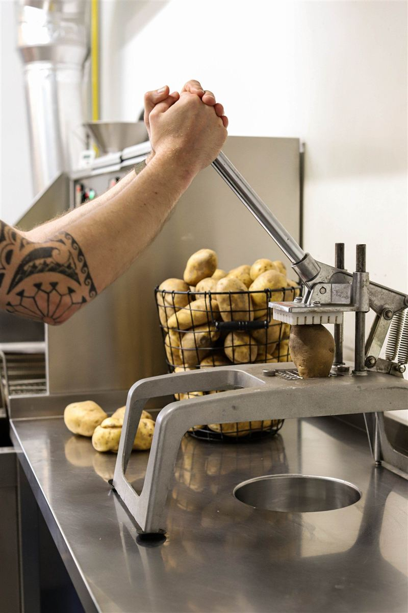
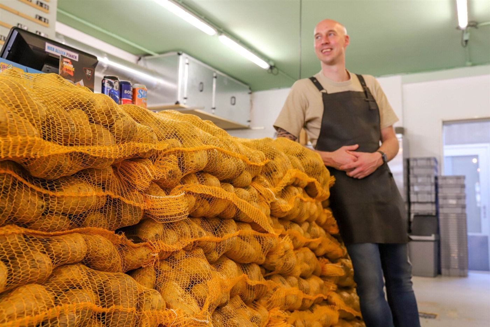
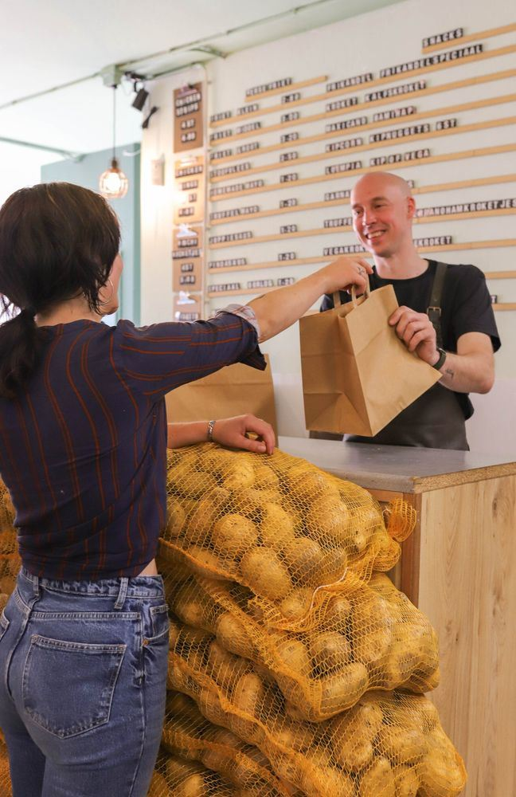

Bij Friet@Katendrecht snijden en bakken we dagelijks verse, ambachtelijke friet speciaal voor jou. Elke aardappel wordt met de hand gecontroleerd en gesneden: lange, lekkere frieten zonder plekjes.
Bekijk hieronder ons menu om af te halen of laat het bij je thuis bezorgen. Of loop gewoon even binnen om te bestellen!
Verse friet
Klein3,30
Middel3,50
Groot4,00
Gezinszak
3 personen12,00
4 personen14,00
5 personen16,00
6 personen18,00

Sauzen
Huisgemaakte mayo1,30
Truffelmayo1,30
Pindasaus1,30
Pindasaus oorlog1,30
Speciaal1,30
Joppiesaus1,30
Pesto mayonaise1,30
Mayonaise0,85
Curry0,85
Ketchup0,85
Stoofvlees
Huisgemaakt stoofvlees, ouderwets lekker3,95
Snacks
Frikandel2,50
Frikandel speciaal3,00
Kroket3,00
Kalfskroket3,25
Mexicano3,50
Bamihap3,50
Kipcorn3,00
Kipnuggets 6 stuks3,50
Loempia kip of vega2,95
Garnalenkroketjes 4 stuks4,60
Truffelkroketjes 4 stuks5,90
Chorizokroketjes 4 stuks5,90
Serranohamkroketjes 4 stuks5,90
Kaassoufflé3,50
Nacho cheese bites4,00
Berenklauw met pindasaus4,25
Vega
Vegakroket3,50
Groentekroket3,50
Vega kipcorn3,50
Vega frikandel3,25
Vega frikandel speciaal4,00
Specials
Chicken strips 4 stuks4,95
Chicken wings 5 stuks4,95
Risotto bitterballen 4 stuks4,60
Bloemkoolbites met pesto mayonaise4,00
Gril bikkel gefrituurde grillworst met kaas3,85
Prijzen in euro. Vragen over allergenen? Vraag het gerust aan de toonbank.





Friet@Katendrecht door Michael van Belle
Friet@Katendrecht is in 2020 opgestart door chef Michael van Belle. Met jarenlange ervaring als chef in diverse keukens werd het tijd voor een eigen zaak.
Waarom een verse frietzaak? Omdat met verse friet op het menu de beleving pas écht een beleving is. Na wat zoekwerk naar een geschikte locatie werd zijn droom al gauw werkelijkheid.
Met liefde en aandacht verricht hij dagelijks een knap staaltje handwerk. Het stoofvlees wordt in huis gemaakt en elke aardappel wordt met de hand gesneden, om er zo de lekkerste en meest verse frieten van te maken.

“Helemaal top, midden in een woonwijk, vlak aan de haven. Super leuke ondernemer met echt hele goede friet. Verse aardappels worden hier zelf geborsteld, voorgebakken en daarna heerlijk afgebakken. Levert ook voorgebakken aan de horeca. Dit moet je geproefd hebben.”
“Beste friet van Katendrecht - of eigenlijk van heel Rotterdam Zuid. Met veel keus in vegetarische en veganistische snacks en goede kennis van allergenen. Leuke enthousiaste ondernemer, dus haal hier je patat!”
Wij leveren aan professionals
Jouw horeca-leverancier van verse friet
Verse friet op jouw menukaart, maar zonder de moeite? Friet@Katendrecht voorziet dagelijks diverse restaurants in Rotterdam van verse frieten.
We snijden en bakken elke dag verse friet, voor consumenten én horecabedrijven. Elke aardappel wordt met de hand gecontroleerd en gesneden. Dat geeft langere friet, minder kleine stukjes die achterblijven en mooiere frieten zonder plekjes. Ook gaat je frituurvet er langer mee. Oftewel: waar voor je geld!
Onze Agria-aardappels komen het hele jaar door uit de Hoeksche Waard. Lekker lokaal! Door met één en dezelfde boer te werken, bieden we het hele jaar kwalitatief hoogwaardige friet. En we frituren in hoge kwaliteit plantaardige olie: dat proef je.

Agriaaardappels uit de Hoeksche Waard
12 mmmet schil, standaard gesneden
wo t/m malevering in de regio Rotterdam
vóór 09:00besteld is dezelfde dag nog in huis
Kom erbij!
We zijn altijd op zoek naar gemotiveerde mensen, met én zonder ervaring. Op dit moment hebben we twee openstaande vacatures.
Snackbarmedewerker
3 dagen per week, dagen flexibel af te stemmen
Wat ga je doen?
Friet en snacks bakken
Bestellingen opnemen en de kassa bedienen
Klanten met een glimlach helpen
Schoonmaken en bijvullen
Wat bieden we?
Parttime baan, 3 dagen per week
Gezellig en hecht team
Marktconform salaris en goede werksfeer
Lekkere snacks tijdens de pauze
Productiemedewerker
2 à 3 ochtenden per week
Wat ga je doen?
Aardappels wassen, snijden en voorbakken
Verse friet voorbereiden
Machines schoonmaken en klaarzetten
Verse friet bezorgen bij horecabedrijven (rijbewijs is een pré, geen must)
Wat bieden we?
Parttime, 2 à 3 ochtenden per week
Flexibele werktijden in overleg
Informele sfeer en fijne collega’s
Marktconform salaris

Past dit bij jou, of bij iemand die je kent? Loop even binnen, of stuur een mail met je cv en korte motivatie.